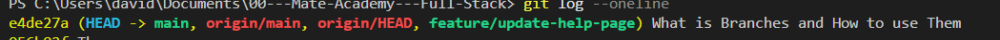
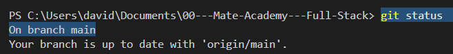
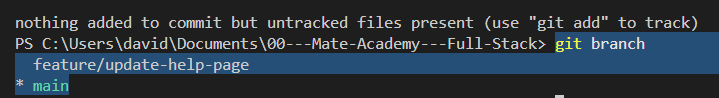
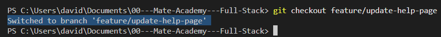
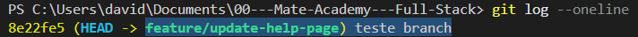

Your first branch
Intro
Aqui iremos ver como criar branchs e alternar entre branchs no VSCode.
Aqui iremos ver como criar branchs e alternar entre branchs no VSCode.
Primeira coisa que temos que fazer é verificar a branch em que estamos.
git log --oneline: iremos comecar dessa forma para nos localizar. Se estivermos vendo main significa que estamos na branch principal de nosso projeto
Primeiramente iremos usar o git branch feature/update-help-page, com essa funcionalidade (feature/update-help-page) iremos atualizar nossa pagina de ajuda.
Feito isso podemos novamente usar o git log --oneline e iremos ver que a branch foi criada:

Para finalizar podemos usar o git status e veremos que no momento ainda estamos em nosso branch main.

Com isso vimos que mesmo apos criarmos nosso branch ainda estamos no main
Com isso iremos podemos observar as branchs disponiveis em nosso projeto.

Para podermos alterar para a branch precisamos do nome dela, iremos usar a nossa criada no exemplo.
Com ele iremos selecionar a branch em que iremos usar. Ex: git branch feature/update-help-page (nossa branch de exemplo). E com isso tera sido feito a mudanca.

Se desejarmos confirmar, podemos usar novamente o git status.
Se usarmos o git log --onelione novamente, podemos observar que esse commit foi para nossa branhc.

Prox aula...
IMPORTANTE: se houverem modificacoes ainda nao atualizadas, nao sera permitido voltar para nosso main.